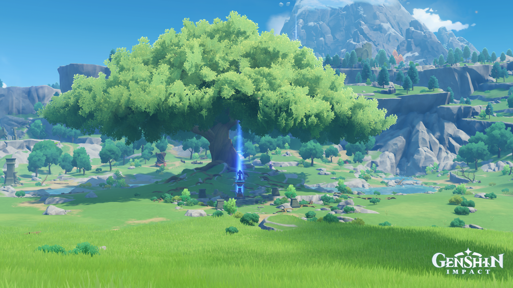
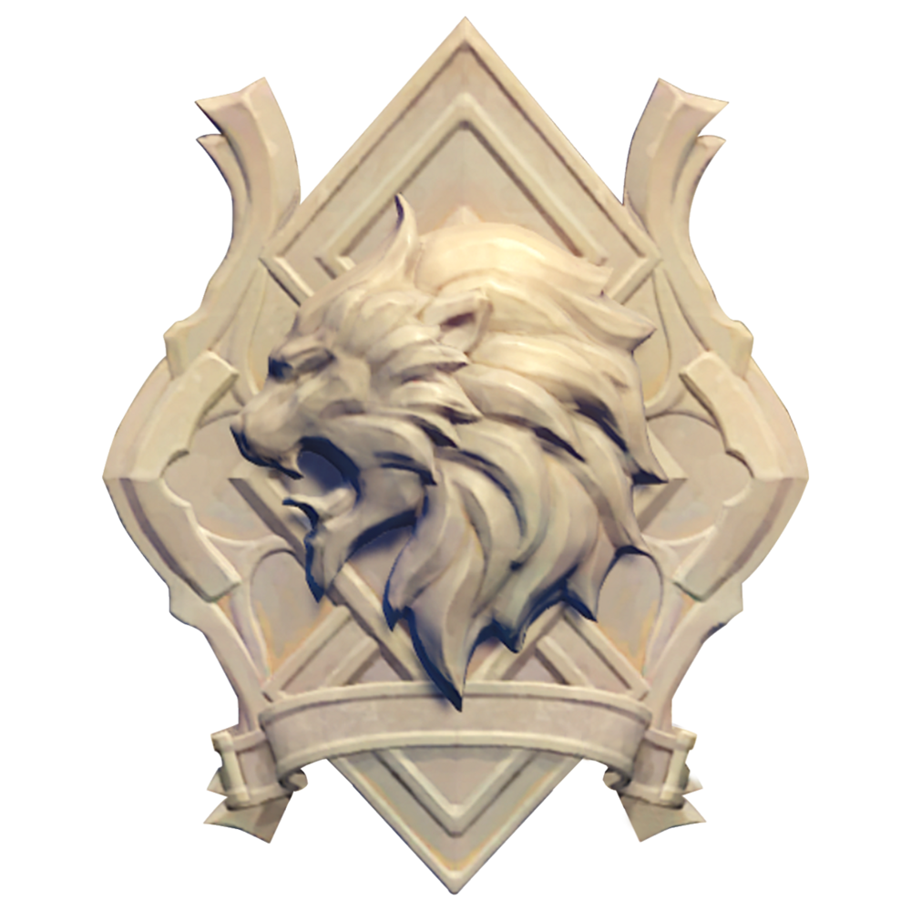
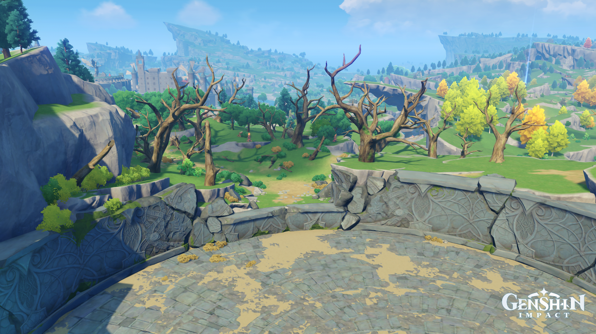
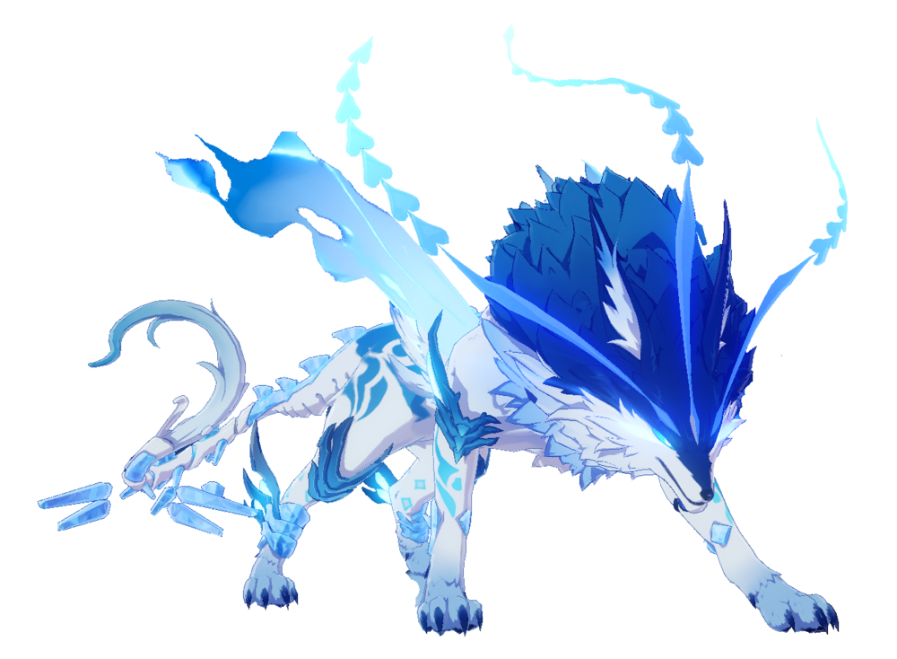
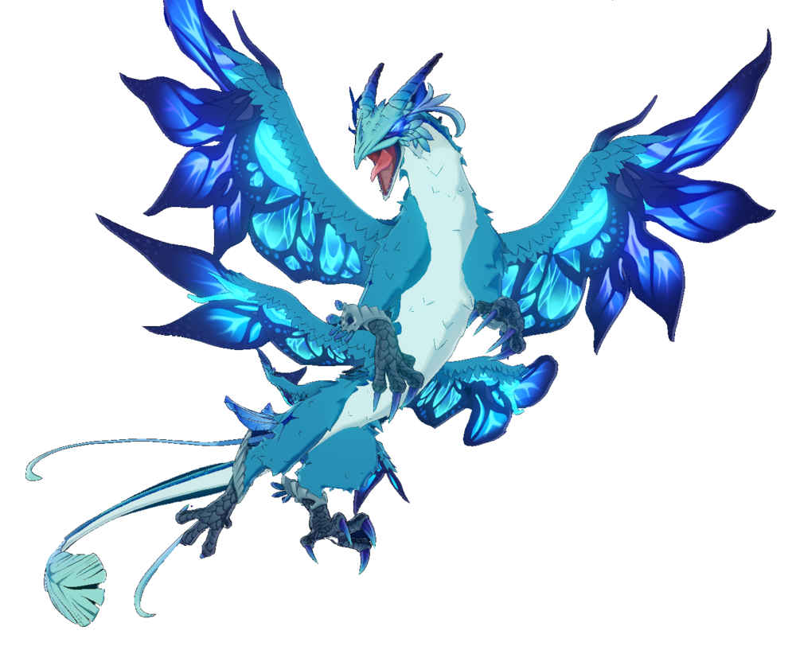

Pouco se sabe sobre Vennessa e suas histórias mais são conhecidas como lendas, o que se sabe é que Vennessa foi uma heróina de Mondstadt que viveu cerca de 1.000 anos atrás, durante a época em que a Aristocracia reinava.
Uma "filha de Murata, tocada pelo fogo" escravizada pelos nobres tirânicos,
ela serviu como gladiadora no Coliseu e ficou conhecida como a
Cavaleira Dente de Leão por sua sequência invicta de vitorias. Com a ajuda de Barbatos e um cavaleiro chamado Ragnvindr, entre outros, Vennessa pôs fim à aristocracia, então estabeleceu a atual Cidade de Mondstadt e
fundou os Cavaleiros de Favonius, tornando-se seu primeiro Cavaleiro de Dandelion.
É dito que, no final de sua vida, ela ascendeu a Celestia na Origem do Vento e assumiu a forma de um falcão. Depois disso, ela se tornou o Falcão do Oeste, um dos Quatro Ventos.
A Origem do Vento

Origem do Vento é o local onde Vennessa ascendeu a Celestia, onde se tornou uma deusa e agora vigia Mondstadt como o Falcão do Oeste dos Quatro Ventos. Acredita-se que o enorme carvalho tenha crescido ali depois que ela subiu.
Uma Estátua dos Sete(Estátua que representa a Imagem dos 7 arcontes de Teyvat) está localizada na base da árvore. A Origem é um vale cercado por ventos, no meio cresce um grande carvalho. A sombra da árvore protege a Estátua dos Sete a seus pés contra a chuva e o vento, como Vennessa protegeu Mondstadt.
O Leão do Sul

O Leão do Sul é uma posição única entre os Quatro Ventos, na medida em que é transmitido entre
os Grandes Mestres (e Grandes Mestres Interinos) dos Cavaleiros de Favonius através do título
de "Cavaleiro Dente-de-leão" ou "Cavaleiro de Dandelion". Diz-se que dentes-de-leão representam as bênçãos do Leão do Sul.
Jean, O atual Leão do Sul
Jean Gunnhildr também conhecida como Leão do Sul ou Cavaleiro Dente-de-leão. Ela é filha de Frederica Gunnhildr e Seamus Pegg, e irmã mais velha de Barbara.
Descendente do prestigioso Clã Gunnhildr, Jean é a Grande Mestre Intendente em exercício dos Cavaleiros de Favonius. Ela está sempre ocupada lidando com distúrbios em Mondstadt e, claro, trabalhando incansavelmente para manter a Cidade da Liberdade.
Como a Grande Mestre Intendente dos Cavaleiros de Favonius, Jean leva todas as suas
responsabilidades e deveres a sério, independentemente de quão triviais as tarefas possam
parecer a ela, como achar um gato perdido. Graças a isso, Jean frequentemente se cansa
tentando cumprir pedidos dos moradores, muito para a preocupação dos outros. A devoção
de Jean a seus deveres a faz ser apreciada por todos de Mondstadt.
Ela vê Vennessa como uma inspiração por causa de suas façanhas e como ela deixou um legado
impressionante para trás. Quando Jean se sente confusa ou desanimada, ela frequentemente vai até
a Grande Árvore na Origem do Vento.
Reino dos Lobos

Reino dos Lobos é uma área em Mondstadt que é a casa de Andrius, Lobo do Norte um dos Quatro Ventos,
e sua matilha. Uma floresta escura e sombria, onde o silêncio parece causar frio na espinha, uma matilha de Lobos
vivendo em meio a essas sombras,esta que é tão perigosa que até mesmo o mais corajoso dos aventureiros não ousa entrar.
O uivar dos lobos pode ser ouvido a longas distâncias...
Andrius, o Lobo do Norte

Andrius, também conhecido como Lupus Boreas (Latin: "Lobo do Vento do Norte"),
era um deus poderoso de Mondstadt, mais conhecido por sua guerra contra Decarabian,
o Deus das Tempestades, durante a Guerra dos Arcontes. Aproximando-se do fim da guerra,
Andrius escolheu abandonar seu corpo físico, deixando para trás seu espírito para proteger
a terra de Mondstadt.
Andrius depois tornou-se um dos Quatro Ventos incumbido
da responsabilidade de proteger a nação a pedido do Arconte Anemo Barbatos.
Em algum momento da história, ele fez do Reino dos Lobos o seu lar,
onde manifesta sua forma feita de gelo e ventos para lutar com aqueles
que aceitam seu desafio.
Em relação a Andrius retrospectivamente,em algum momento da Guerra dos Arcontes, o conflito entre Andrius e
Decarabian teve início. Andrius declarou guerra a Decarabian, que
fechou a capital de sua cidade; área conhecida hoje como Toca de Stormterror;
dentro de uma parede de tempestades começando, aí, a Era dos Reis.
A guerra chegou num impasse: Andrius não conseguia sequer arranhar a
torre do Senhor das Tempestades, enquanto Decarabian não mostrava nenhum
interesse em enfrentar Andrius; talvez por falta de capacidade. Entretanto,
o povo de Decarabian, descontente com sua forma de governo, se voltou
contra ele com a ajuda de Barbatos 2600 anos atrás, resultando em sua
morte.
Em algum momento durante a guerra, Andrius percebeu que não era digno de se
tornar o Arconte Anemo, pois não se encaixava no papel de um governante amoroso
que poderia cuidar da humanidade. Percebeu que sua nevasca só era capaz de
acabar com a vida e não nutri-las. Ele então, decidiu deixar seu poder fluir
para a terra de Mondstadt nutrindo-as e nutrindo também o povo que ali morava,
trazendo, assim, fim à tempestade de gelo. Não se sabe exatamente quando Decarabian
morreu, mas estima-se que foi nesse mesmo período ou um pouco antes.
Após a morte de seu corpo físico, parte do espírito de Andrius e de seu poder tomaram
a forma de gelo que é vista hoje. Entretanto, essa forma é incapaz de controlar todo
seu poder. Mais ou menos mil anos atrás, depois da rebelião de Vennessa contra a
Aristocracia de Mondstadt, Andrius oficialmente se tornou um dos Quatro Ventos,
enquanto os Cavaleiros de Boreas; posição que possui uma relação desconhecida a ele;
se juntaram aos recém criados Cavaleiros de Favonius.
No passado, o Templo do Lobo era usado para adorá-lo, mas há muito foi abandonado,
enquanto o espírito de Andrius habita o outro lado de Mondstadt.
Andrius eventualmente se tornaria o líder de um grupo de lobos no Reino dos Lobos,
enquanto continuava a aceitar as crianças abandonadas em sua alcateia. Em algum momento
antes do início do jogo, ele encontrou e acolheu Razor. O Grande Mestre atual dos
Cavaleiros de Favonius, Varka, também é o atual Cavaleiro de Boreas.
Antes de sair em sua expedição, ele às vezes visitava o Reino dos Lobos;
embora sua relação com Andrius não seja clara.
A toca do Stormterror e O Dragão do Leste
A Toca do Stormterror já foi a capital da Antiga Mondstadt, quando era governada por
Decarabian nos dias atuais tudo que sobrou foram ruínas de um período sombrio. Depois que Decarabian foi morto em um levante, Barbatos tornou-se o Arconte Anemo
e remodelou a terra antes coberta por tempestades de neve causadas por Andrius. As pessoas então mudaram a
capital para uma ilha no meio do Lago de Sidra, onde a Cidade de Mondstadt permanece
até hoje.
Dvalin, O Dragão do Leste

Dvalin, também conhecido como Stormterror, é um dragão elemental Anemo e o Dragão do Leste
original de Mondstadt dos Quatro Ventos. Ele tem sido o amigo do Arconte Anemo Barbatos
por quase 2.000 anos e é o mais antigo dos Quatro Ventos.
No entanto, durante o cataclismo quinhentos anos atrás, Dvalin foi gravemente ferido na
batalha contra o dragão negro corrompido Durin e se estabeleceu na torre abandonada do
antigo deus Decarabian para se recuperar. Ao longo de quinhentos anos, o veneno do
Abismo que tinha nas veias de Durin e que Dvalin ingeriu continuou a atormentá-lo,
enquanto o povo de Mondstadt o esquecia já que o Arconte Anemo também havia entrado em um estado
de sono profundo após guerra contra Decarabian.
Quando ele finalmente acordou, Dvalin
acreditava ter sido abandonado pelo Arconte Anemo e por Mondstadt. A Ordem do
Abismo aproveitou-se disso para corromper sua mente ainda mais, incitando-o a
atacar Mondstadt e dando ao dragão o nome de "Stormterror"


.png)